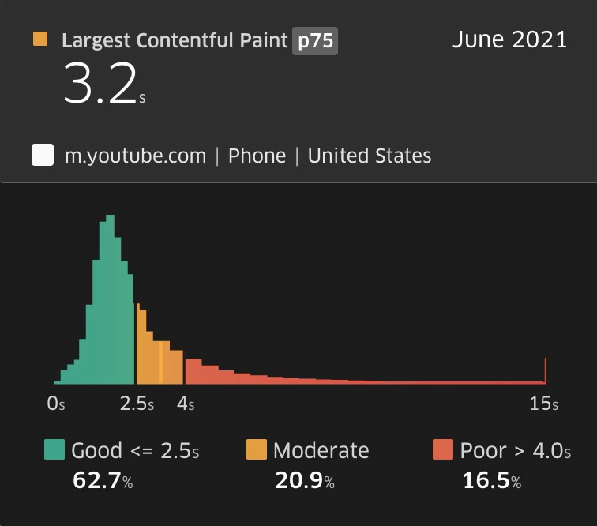

An Inclusive Web is Fast by Default
Simon Hearne
Web Performance Architect
ü§î
We treat connectivity as a utility
65% of people in the developing world do not have access to fast internet
it's 20% in the developed world
Connecting for Inclusion: Broadband Access for All. The World Bank.
Performance is key to inclusion
1,200kB
Feather was under 100kB
Feather was slower...


Performance is a distribution
So was Feather a success?
Reasons for low quality internet
- 1 in 2 US households have no broadband
- 15% of the UK has no 4G coverage
- Natural disasters
- Travel (connection & roaming charges)
- Low power / battery saver mode
How many of these do you experience while designing / developing an app?
But our data shows...
- What about 'ghost bounces'?
- 88% of Firefox users block GA (1)
- 40% of Safari users block GA (1)
- 40% more blocking in developing world (2)
- CRUX only has data for Chrome
There are many reasons why not all users are represented in your data.
1. 58% of Hacker News, Reddit and tech-savvy audiences block Google Analytics
2. Ad Blocker Usage and Demographic Statistics in 2021
Building fast, inclusive experiences
- Understanding the problem
- Designing for speed
- Adapting to the user
- Convincing the boss
Understanding the Problem
Users are not averages

Designing for Speed
Get out of jail free
Lite sites for quick loading

Fast by default?
Performance must be baked in
Project Timeline
Project Timeline
Progressive Enhancement FTW
Images
JavaScript
Rich Media
Painting Fast
Prioritising Assets
Removing Jank
Adapting to the User
Data Saver

Network Info API
// navigator.connection
NetworkInformation {
downlink: 5.4
effectiveType: "4g"
onchange: null
rtt: 150
saveData: false
}
Client Hints
GET /index.html
accept-ch: Downlink,RTT,Device-Memory,Save-Data,DPR,Width
...
GET /image.jpg
downlink: 6.75
rtt: 100
dpr: 2
width: 1025
device-memory: 8
Convincing the Boss
Buy-In Methods
- Say pleeeease
- 10% chance of success
- Use global stats
- 20% chance of success
- Use your own data
- 30% chance of success
- Say "SEO" repeatedly
- 50% chance of success
- Competitive benchmarking
- 60% chance of success
Tips to Build Empathy in Design
1. Use Chrome's throttling features
2. Set aggressive budgets for JS
0kB to render, 100kB total
3. 2G Tuesdays

4. Use a low-spec device for testing
5. Browse with JavaScript disabled

6. Consider third-parties
- GTM & Google Analytics without JavaScript
- Remove third-parties with high JS cost
- Defer third-parties until after page load
Performance is all about empathy
The future is already here,
it's just not evenly distributed
William Gibson
Thank you üôè
@SimonHearne
simonhearne.com